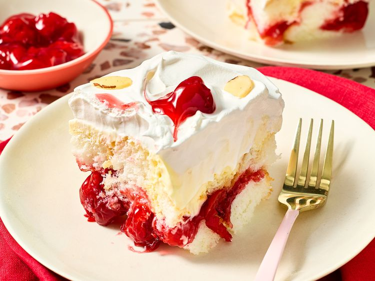

Heaven on Earth

Meet Heaven on Earth Cake: The No-Bake Dessert You'll Want to Make All Summer Long
This heaven on earth cake is an easy summer no-bake dessert that can be made up to 2 days ahead. Airy angel food
cake cubes are layered with cherry pie filling and rich vanilla pudding, then topped with swirls of whipped
topping and more cherry filling.
By Diana Moutsopoulos
Tested by Amanda Holstein
Prep Time:
15 mins
Chill Time:
8 hrs
Total Time:
8 hrs 15 mins
Servings:
8
Ingredients
(14 ounce) purchased angel food cake, cut into 1-inch pieces
(21 ounce) can cherry pie filling, divided
(3.4 ounce) package vanilla instant pudding mix and pie filling (such as Jell-O®)
1/2 cups whole milk or half-and-half
(8 ounce) container frozen whipped topping, thawed
sliced almonds (optional)
Directions
-
Gather all ingredients.
Place half of angel food cake pieces in the bottom of a deep 8-x-8-inch or 9x9-inch baking dish in an
even
layer. Spread 1 cup cherry pie filling over top of cake. Top with remaining cake pieces in an even
layer.
-
Whisk together vanilla pudding mix, whole milk, and sour cream in a large bowl until slightly thickened
and
smooth, about 1 minute.
Pour pudding mix over top of cake and spread evenly.
-
Spread thawed whipped topping over pudding layer. Dot with remaining 1 cup cherry pie filling. Using a
toothpick
or spoon, swoop and swirl pie filling into the whipped topping. Refrigerate, uncovered, for at least 8
hours
or
up to 12 hours. Garnish with sliced almonds.
Recipe developed by Amanda Stanfield